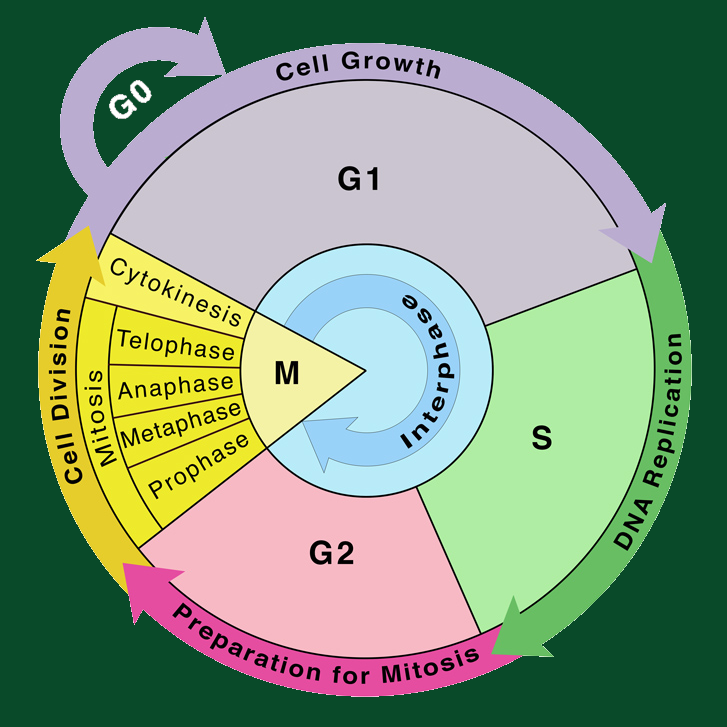

The cell cycle is a precisely orchestrated series of events that dictates the life of a eukaryotic cell.
Comprising a sequence of phases, the cell cycle is fundamental to cellular growth, development, and
reproduction. The cycle is divided into two main phases: interphase and mitosis. Interphase, accounting
for the majority of the cell cycle, consists of three sub-phases – G1, S, and G2. In G1, the cell grows
and carries out its normal functions. The S phase involves DNA synthesis, where the genetic material is
replicated, ensuring that each daughter cell receives a complete set of chromosomes. G2 marks the final
preparations for cell division, making certain that the cell is ready for the upcoming mitotic phase.
Mitosis is the phase responsible for cellular division and involves the distribution of duplicated
chromosomes into two daughter cells. This process is crucial for growth, tissue repair, and maintenance
in multicellular organisms. Mitosis consists of distinct stages, starting with prophase, where chromatin
condenses into visible chromosomes, and the nuclear envelope begins to disintegrate. Metaphase follows,
characterized by the alignment of chromosomes along the cell's equator. Anaphase sees the separation of
sister chromatids, which move towards opposite poles of the cell. Telophase concludes mitosis, as
nuclear envelopes re-form around the chromatids, resulting in the formation of two distinct nuclei. The
final step, cytokinesis, physically divides the cell into two daughter cells, each containing a full
complement of genetic material.
The cell cycle is tightly regulated through checkpoints, ensuring the accurate progression of events.
Regulation is crucial to prevent errors that might lead to genetic abnormalities, uncontrolled cell
growth, or the development of diseases such as cancer. Understanding the intricacies of the cell cycle
is pivotal for advancements in biology, medicine, and the treatment of various disorders.
